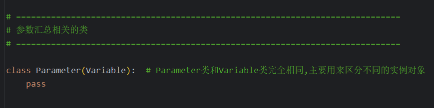
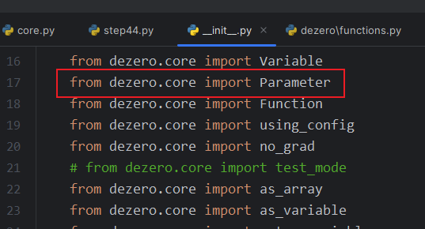
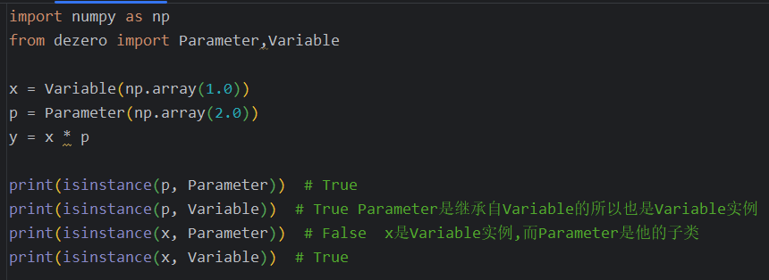
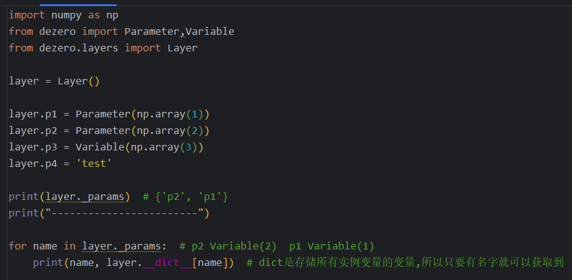
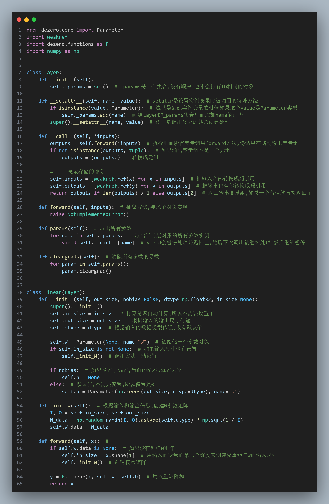
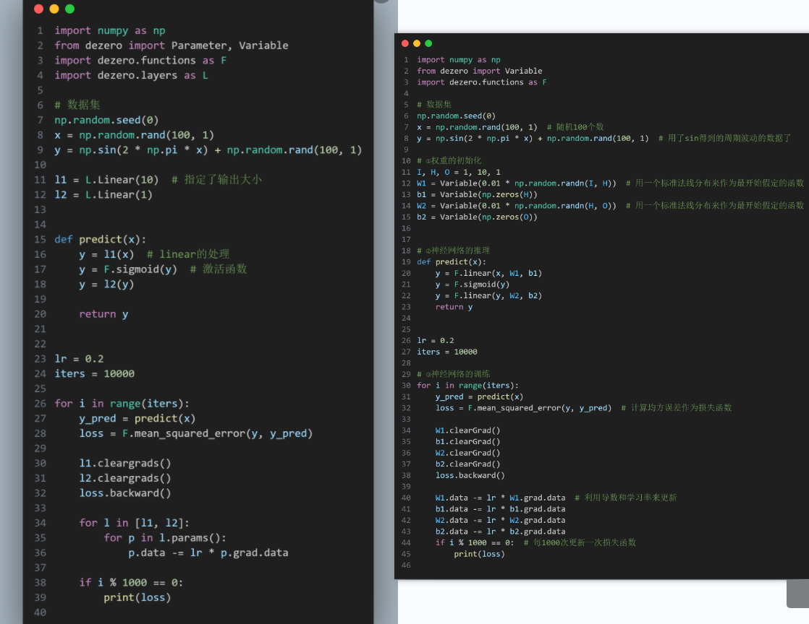

44.汇总参数的层
44.1 Parameter类的实现
参数是通过梯度下降等优化方法进行更新的变量.这一节的主要目标是创建汇总参数的机制,实现参数的自动化管理
在core类当中添加了新的Parameter类

在dezero的__init__里面导入Parameter类

调用,从而实现区分不同数据

44.2 Layer类的实现
新建了代码,实现对Paramater参数名字的收集

使用层来收集参数信息

44.3 Linear类的实现
linear通过继承Layer来实现

44.4 使用Layer实现神经网络
使用Layer来汇总参数部分,实现神经网络的优化设置

助记小故事-苹果分类
助记小故事:一场暴雨袭过,天晴后小熊来带苹果园.地面上散布大量的水果,小熊首先需要把好的苹果和坏的区分开来,就用Parameter和Variable来进行区分,把好的苹果都用Parameter表示,贴上一个红红的P标签,还闪耀着金光,然后将好的这些苹果还需要根据大小来区分,小熊就用一排排长条形漏斗,他们漏的越来越小层叠摆放,这样从最上面一路下来之后,不同大小的苹果就分层摆放好了,这个漏斗就是layer方法.